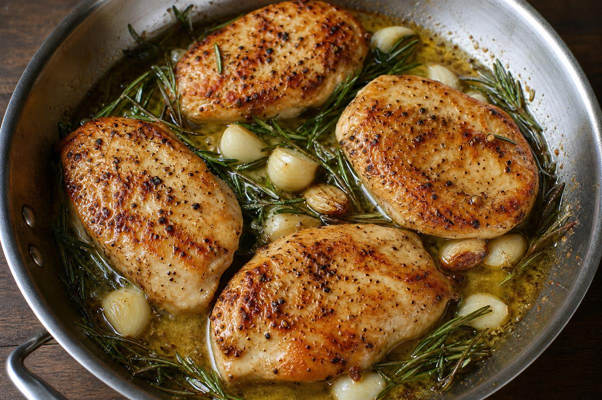
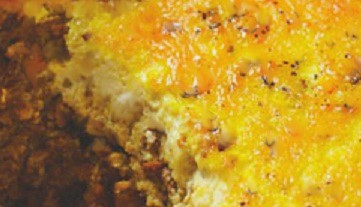

DINNER
✿ ✿ ✿
Satisfying dinners for the end of the day — gluten-free, onion-free, and South African friendly where it counts.
1. Chicken
Simple proteins with herbs and butter.
- Garlic Butter Chicken
- Lemon Herb Roast Chicken
- Creamy Chicken & Rice

Garlic Butter Chicken
2. South African Favourites
Beloved classics, adapted for the Huntress.
- Bobotie (GF Version)
- Cape Malay Curry (Onion-Free)
- Potjiekos (GF)

Bobotie (GF)